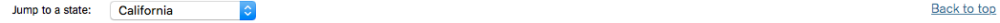

Pros
Well Done Static State Bar

While guiding yourself through the interactive visualization, one part of the screen is always fragmented on the top. It tells you which state visualization you currently on, gives a drop down menu to access other states in ascending order.
Geographic State Change

Allows user who is aware of the map of the United States and can geographically pick an individual state that stands out to them in a grander scale.
Yang Hao progress: This week I
- Created and organized the data sets needed to fulfill the section C requirements.
- Created the percent() and switch_hour() functions.
- Finished 5 different tables of data for the Shiny dashboard.
- Made the dashboard reactive to the hour format and the selected airport and month.
- Screenshots of the tables I created can be found in this PDF.
Sharable with social Media

Easy Sharability with platforms:
- Twitter
- Facebook
- Pintrest
Just having a cool visualization is useless if you dont have someone to share it with. In this visualization, the creators have targeted famous social medias to help spread their visualization to the world.
Some more platforms they could have included:
Google APIs
Github or VC for developer uses
Data files for open source uses and implementations
Design some reactive features for picking date for more information
Cons
Weekly Summary: March 16, 2018
Guillermo Rojas Hernandez progress:
Worked on getting a latest draft of the project to work on the EVL server
Researched possible data sets to integrate for the graduate portion of the project
Looked into heat map customizations for our chart
Yang Hao progress:
Pick a type of delay for more info on how it changes over a 24 hours of the day and the 12 months of the year.
Pick a destination/arrival airport from the top 50 and see how the number of flights to and from the location change over the 24 hours of the day and the 12 months of the year
Natasha Rice progress:
Figured out how to add days/months/hours that had no data so that the x- and y-axis' made sense.
Worked on getting project onto the EVL shiny server with Guillermo
Completed a map displaying the percentage of states arrival/departure in the us
Compleated picking a date and seeing data for that day.
Compleated picking a day of the week and seeing data for that day
Compleated picking an airline and showing that data by hour/month
Compleated allowing the user to compare delays over months.
Siddharth Basu progress:
Currently working on section A: Interesting Days
Further maintaince on website by setting up final project requirements
Learned new Rstudio libraries and implemented a sub menu tab (Interesting days)
Organized the weekly progresses and sent updates
Looked deeper into the raw datafiles and data tables with Natasha.